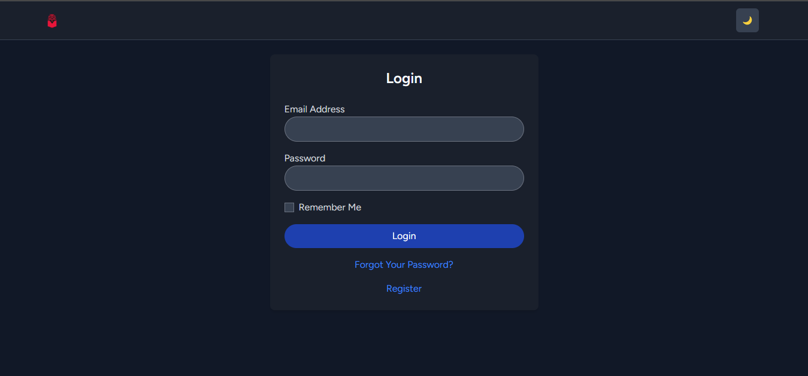
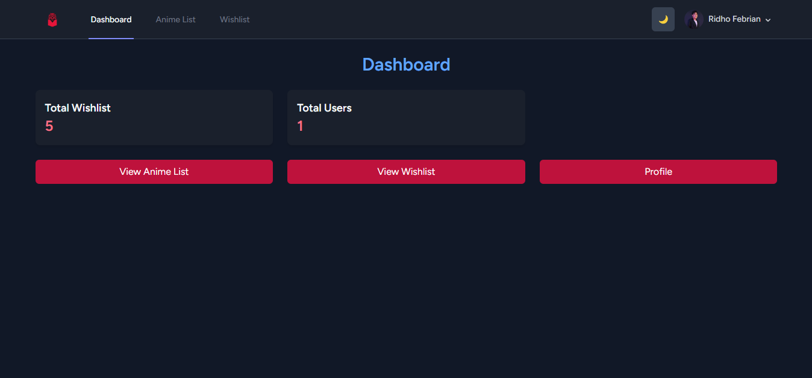
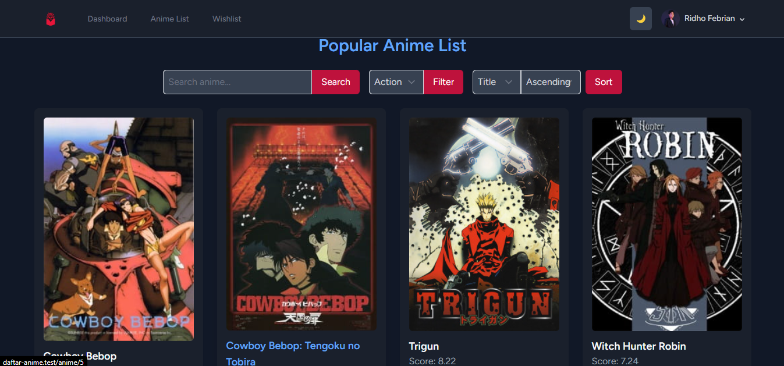
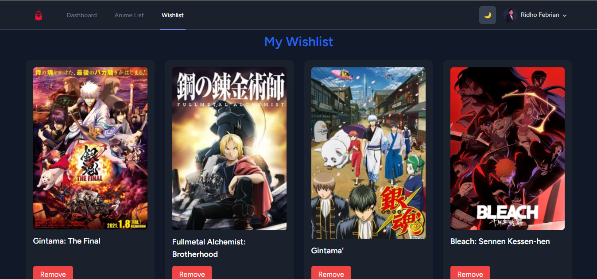
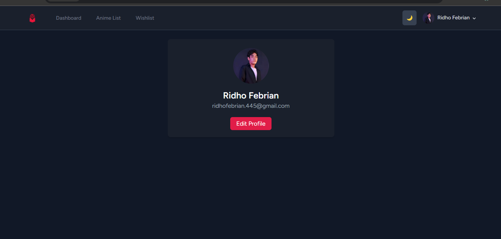

Project 2 - Anime List
A web-based application that allows users to search, filter, and save anime to their personal wishlist. Built with Laravel 11, Alpine.js, and TailwindCSS, this project integrates the Jikan API to fetch real-time anime data.
Features:
- ✅ User Authentication (Register, Login, Profile Update)
- ✅ Search & Filter anime by genre, title, and rating
- ✅ Wishlist Management (Add & Remove anime from wishlist)
- ✅ Dark Mode with smooth transition
- ✅ SweetAlert notifications for better UX
Git Repo →

Login Page

Dashboard Page

Anime List Page

Wishlist Page

Profile Page

Edit Profile Page
Tech Stack:
- Frontend : Alpine.js, Tailwind CSS
- Backend : Laravel, MySQL Database
- API Integration : Jikan API
- UI Enhancements : SweetAlert